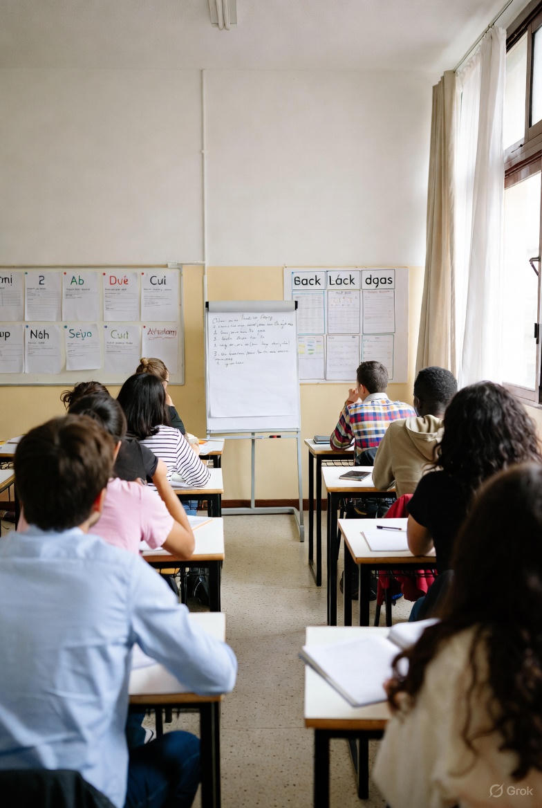
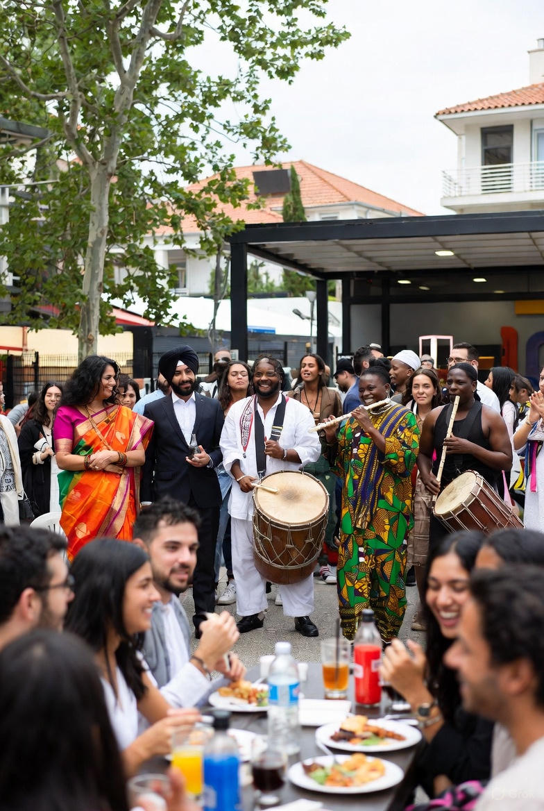

Visão geral:
O diálogo intercultural constitui um pilar fundamental para o desenvolvimento de sociedades plurais e coesas, promovendo o entendimento mútuo entre indivíduos e comunidades de origens culturais diversas. O pluralismo, enquanto valorização da diversidade como recurso coletivo, incentiva a convivência equitativa e o respeito pela dignidade humana. De acordo com o Conselho da Europa e a UNESCO, estas práticas são essenciais para mitigar a intolerância, fomentar a inovação social e construir um futuro sustentável, alinhado com os Objetivos de Desenvolvimento Sustentável (ODS) da ONU, nomeadamente o ODS (Paz, Justiça e Instituições Eficazes).
Projetos de intercâmbio
Erasmus+, eTwinning e parcerias internacionais.

Aulas de português para migrantes
Programas de acolhimento e integração linguística.

Festivais culturais
Semana da interculturalidade, feiras e exposições.